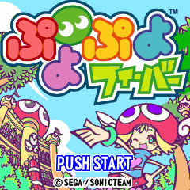
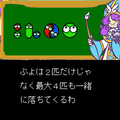

| アーケード、家庭用で大好評の『ぷよぷよ』シリーズ最新作がｉアプリで登場！ 従来に加え、新たに「フィーバーモード」というルールが追加されました。 「フィーバーモード」をうまく利用すれば初心者でも大連鎖を作れ、 初めての人にも腕に覚えのある人にも楽しめる仕様になっています。 |
||
|
| <<
ゲームの説明 >> |
| ■ どんなゲーム？ |
|  |
このゲームでは、以下のモードが遊べます。 |
| ■ 操作方法 |
|
【左右キー】：ぷよ左右移動 |
| ■ 遊び方 |
 |
ぷよは2匹だけじゃなく、最大4匹も一緒に落ちてきます｡ 落ちてくるぷよは､左右ｷｰで左右に動かせます｡ 決定キーを押すと回転させることができるけど､4匹一緒の大ぷよだけは色が変わります｡ ちなみに､下キーを押すと速く落とすことができます｡ |
| ■ ぷよを消して連鎖しよう！ |
 |
同じ色のぷよは､4匹以上つながると消えます｡ |
| ■ そうさい |
 |
逆におじゃまぷよが来ても慌てない！ こちらも連鎖すればおじゃまぷよを打ち消すことができます｡これが相殺（そうさい）｡ すべてを打ち消すことができなくても､ 一つでも相殺すればその直後はおじゃまぷよは落ちてこないぞ｡ |
| ■ フィーバー |
 |
更に､相殺するとフィーバーゲージがたまっていきます｡フィーバーゲージがいっぱいになると､フィーバー開始！ フィーバーになるとそれまで送られてきたおじゃまぷよが､しばらく落ちてきません｡ それだけでもラッキーなのに､自分で組まなくてもすぐ連鎖できる連鎖のタネが次々と落ちてきます｡ うまく連鎖できても失敗しても､次のタネが落ちてきます｡でも､うまく連鎖した方が次のタネは大きくなります｡ うまく使えばすごいおじゃまぷよを送れます｡ |
| ■ ゲームオーバー |
 |
真ん中の2列が上まで埋まってしまうとゲームオーバーです｡ |
<<戻る>>
© SONICTEAM / SEGA